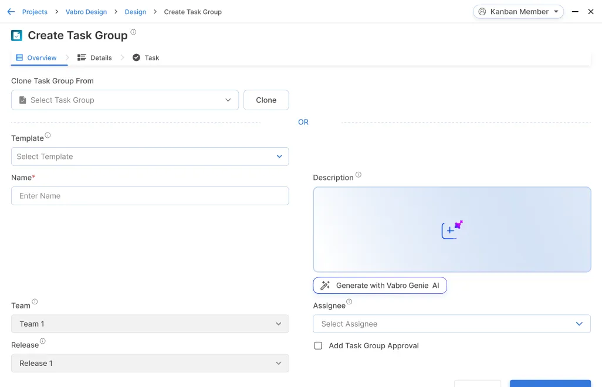

You can create a Kanban board in Vabro with columns representing each stage of your workflow (e.g. Backlog, To Do, In Progress, Review, Done). Use Vabro's board visualization features to create clear visual representations of your workflow.
Effortlessly Manage Work across all Frameworks
Workflow
Automate and optimize task flow for maximum efficiency.
Kanban Backlog
Prioritize and organize tasks efficiently for streamlined execution.

Task Groups
Organize related tasks efficiently for seamless team collaboration.

Tasks
Assign, track, and complete tasks effortlessly with automation and collaboration tools.
Time Tracking
Monitor work hours effortlessly for better project planning and resource allocation.
Watchers
Stay updated with real-time task notifications and progress tracking.
Escalations
Ensure swift issue resolution with automated escalation workflows.
Forms
Standardize data collection and improve process accuracy with customizable forms.
WIP Limits
Prevent overload and enhance efficiency with controlled work-in-progress limits.
Kanban Board
Streamline workflows with flexible, visual task management.
Reports
Make data-driven decisions with powerful Reporting & Analytics.
Self-Assign
Enable teams to take initiative and drive work forward efficiently.